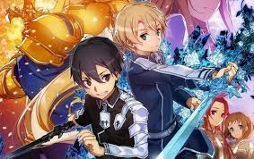

Bleach
Anime Bleach merupakan sebuah seri manga shōnen Jepang yang ditulis dan diilustrasikan oleh Tite Kubo. Alur ceritanya mengisahkan petualangan remaja keras kepala bernama Ichigo Kurosaki yang mewarisi takdir orang tuanya, setelah dia mendapatkan kekuatan Shinigami (死神 Shinigami, terj. har. "Dewa Kematian")—sebuah personifikasi kematian yang mirip dengan Malaikat Maut—dari Shinigami lainnya, Rukia Kuchiki. Kekuatan baru ini memaksanya untuk melakukan tugas melindungi manusia dari roh-roh jahat dan menuntun jiwa-jiwa yang mati ke alam baka, dan membawanya ke petualangan-petualangan di berbagai alam spiritual yang ada.
Pengalaman saat pertama kali menonton anime ini sangatlah menyenangkan berawal dari kisah seorang pelajar sma biasa yang mendadak menjadi seorang shinigami yang sangat kuat hingga menandingi shinigami tingkat captain yang pada awalnya untuk menyelamatkan temannya hingga akhirnya menyelmatkan dunia
Dr Stone
Anime Dr Stone merupakan anime yang menceritakan 3700 tahun setelah kilatan cahaya misterius mengubah umat manusia menjadi batu, seorang remaja jenius bernama Senku Ishigami bangkit dan menemukan dirinya di dunia tempat di mana semua jejak peradaban manusia telah terkikis oleh waktu. Senku yang menyadari bahwa dirinya dibangkitkan dengan asam nitrat, menghidupkan kembali temannya yang bernama Taiju Oki dan teman sekelas mereka Yuzuriha Ogawa untuk membangun kembali peradaban mereka.
Pengalaman yang didapat saat kita menonton anime dr stone tentulah rasa penasaran dan tertarik untuk mempelajari Ilmu Sains secara mendalam, mengapa tidak ? di anime ini telah mengajarkan kita bahwa sains sangatlah seru dan menarik dan tetnunya penting untuk survival
Naruto
Naruto merupakan sebuah serial manga karya Masashi Kishimoto yang diadaptasi menjadi serial anime. Manga Naruto bercerita seputar kehidupan tokoh utamanya, Naruto Uzumaki, seorang ninja yang hiperaktif, periang, dan ambisius yang ingin mewujudkan keinginannya untuk mendapatkan gelar Hokage, pemimpin dan ninja terkuat di desanya. Serial ini didasarkan pada komik one-shot oleh Kishimoto yang diterbitkan dalam edisi Akamaru Jump pada Agustus 1997.
Membahas mengenai naruto siapa yang tidak tahu Naruto ? naruto merupakan anime yang telah menjadi tontonan sejak tahun 2000 an mengisahkan mengenai jalan hidup untuk pantang menyerah hingga mencapai cita cita entah harus melewati liku hidup yang sangat tak menentu tpi naruto pun akhirnya berhasil menggapai cita citanya
Sword Art Online (SAO)

Sword Art Online adalah seri novel ringan Jepang yang ditulis oleh Reki Kawahara dan diilustrasikan oleh ABEC. Serial ini berlangsung pada masa depan yang dekat dan berfokus pada berbagai dunia permainan virtual reality MMORPG .
Sao merupakan anime yang membuka mata kita akan perkembangan teknologi yang mungkin saja terjadi di masa depan dimana virtual reality bsa menjadi sangat realistis namun karena terlalu realistisnya itu membuktikan bahwa teknologi jika dipegang oleh pihak yang salah akan sangatlah berbahaya
The Rising of Shield Hero
The Rising of Shield Hero menceritakan seorang karakter Iwatani Naofumi dipanggil ke sebuah dunia paralel bersama dengan tiga orang lainnya untuk menjadi para Pahlawan dunia. Mereka semua diperlengkapi dengan senjata legendaris mereka ketika dipanggil. Naofumi menerima Perisai Legendaris, sebuah peralatan untuk pertahanan mutlak, sementara yang lain menerima senjata yang mampu menyerang. Karena kurangnya karisma dan pengalaman Naofumi, ia hanya ditemani oleh satu rekan saja—seorang wanita cantik, sementara yang lainnya memiliki beberapa rekan.
Anime ini akan sangat cocok untuk semua orang yang pernah merasa terbully dan punya keinginan untuk membuktikan kemampuannya dan anime ini pun mengajarkan kita untuk tetap optimis jgn menyerah dan terus bersabar menghadapi semua cobaan